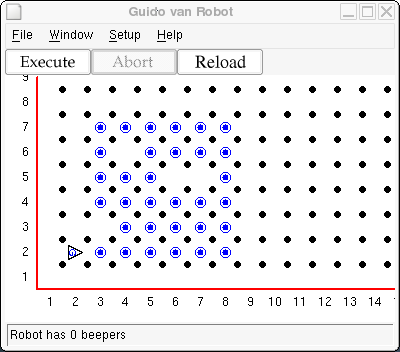

You have learned a lot about programming Guido. Congratulations! What you may not realize is that you have learned a lot about programming in any language. Most programs are a sequence of steps, interspersed with conditional decisions and groups of instructions that repeat. All of the projects have been successively more complex.
Implementing the solutions to the assignments so far has required a little more thought at each step. You understand the question and the desired result, but it's not immediately clear sometimes how to get it done. You should have realized that the way you would do it if you were Guido is often the way Guido would do it, using the instructions available.
Often, then, it's best to figure out how you would accomplish a task. Write the steps down in your own words with pencil and paper. This is sometimes called pseudocode because it isn't really instructions that Guido could use. But it helps you understand what needs to happen. Then you code it -- write the real instructions -- to create a GvR program.
Be sure to think this assignment through before you start coding. First figure out the algorithm, or sequence of steps, required. Then, looking at the sample world, simulate in your mind the execution of the program you are going to write. If it does what you expect, then and only then should you start coding.
Guido's Dad is a farmer. When Guido is not doing his homework, he helps in the field. Today he has to harvest the crop. The field always has 6 rows and 6 columns, but the crop did not grow in all the locations, as shown. Create a world with a mostly populated 6x6 field in the middle as shown.

Harvest the crop using a nested iterate statement - one or more iterate statements within an iterate statement - to perform the harvesting operation. In pseudocode, this would be something like:
iterate six times
go across, harvesting beepers
go back to left edge
go up one
stop
but the "go across, harvesting beepers" is an iteration itself:
iterate six times
iterate six times
go one to the right
harvest if possible
go back to left edge
go up one
stop
Note that pseudocode is not GvR code but a more English-like
description of the algorithm in code-like structure. Once the pseudocode is
written, turn it into GvR code and execute it to complete this assignment.
Here is a sample world file for this project, to save you some typing:
Robot 2 2 E 0 Beepers 3 2 1 Beepers 4 2 1 Beepers 5 2 1 Beepers 6 2 1 Beepers 7 2 1 Beepers 8 2 1 Beepers 4 3 1 Beepers 5 3 1 Beepers 6 3 1 Beepers 7 3 1 Beepers 8 3 1 Beepers 3 4 1 Beepers 4 4 1 Beepers 5 4 1 Beepers 6 4 1 Beepers 7 4 1 Beepers 8 4 1 Beepers 3 5 1 Beepers 4 5 1 Beepers 5 5 1 Beepers 8 5 1 Beepers 3 6 1 Beepers 5 6 1 Beepers 6 6 1 Beepers 7 6 1 Beepers 8 6 1 Beepers 3 7 1 Beepers 4 7 1 Beepers 5 7 1 Beepers 6 7 1 Beepers 7 7 1 Beepers 8 7 1
Copyright © 2003 Roger Frank.